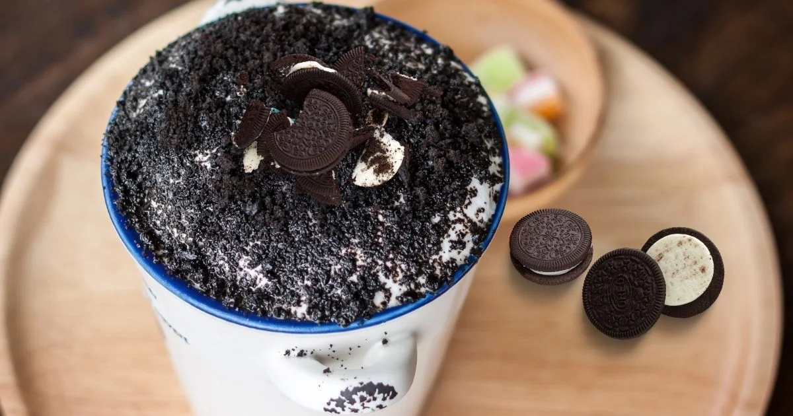
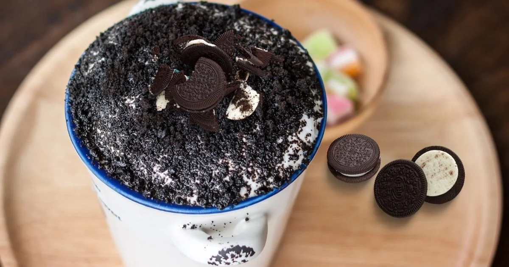
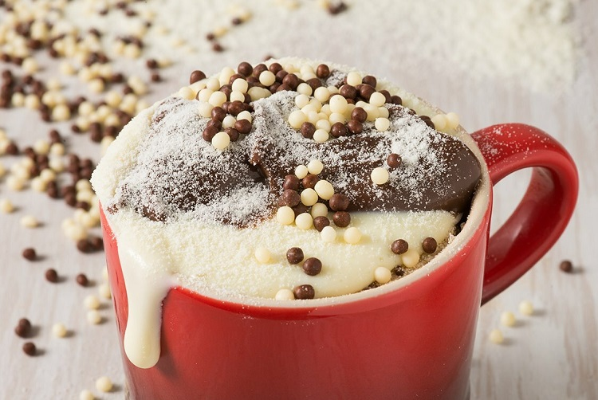
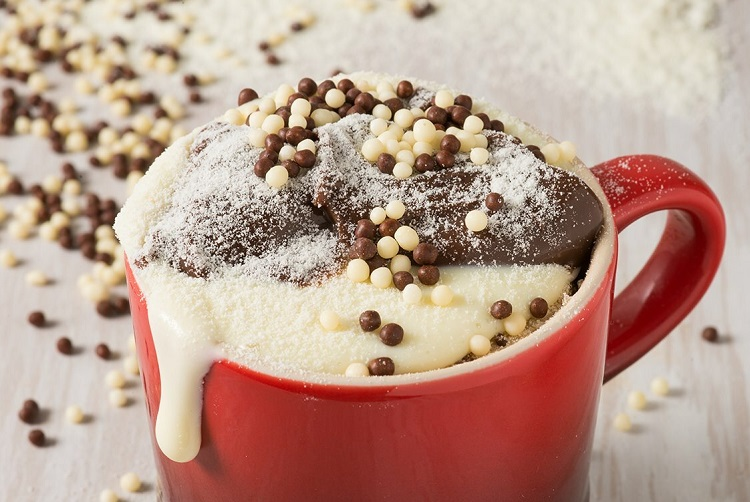

BOLO DE CANECA
 

 


INGREDIENTES:
1 ovo
2 colheres (sopa) de achocolatado em pó
3 colheres (sopa) rasas de açúcar
4 colheres (sopa) rasas de farinha de trigo
1 colher (sopa) de óleo
1 colher (café) rasa de fermento em pó
4 colheres (sopa) de leite
CALDA:
2 colheres (sopa) de achocolatado em pó
1 colher (sopa) de margarina
1/2 xícara de leite
MODO DE PREPARO:
Coloque todos os ingredientes dentro de uma caneca de aproximadamente 300 ml ou mais
Mexa até obter uma massa homogênea e leve ao micro-ondas por 3 minutos
MODO DE PREPARO CALDA:
Coloque todos os ingredientes em uma panela, leve ao fogo médio e misture até obter uma consistência grossa
Despeje a calda sobre o bolo assim que retirá-lo do microondas
Para o seu dia a dia